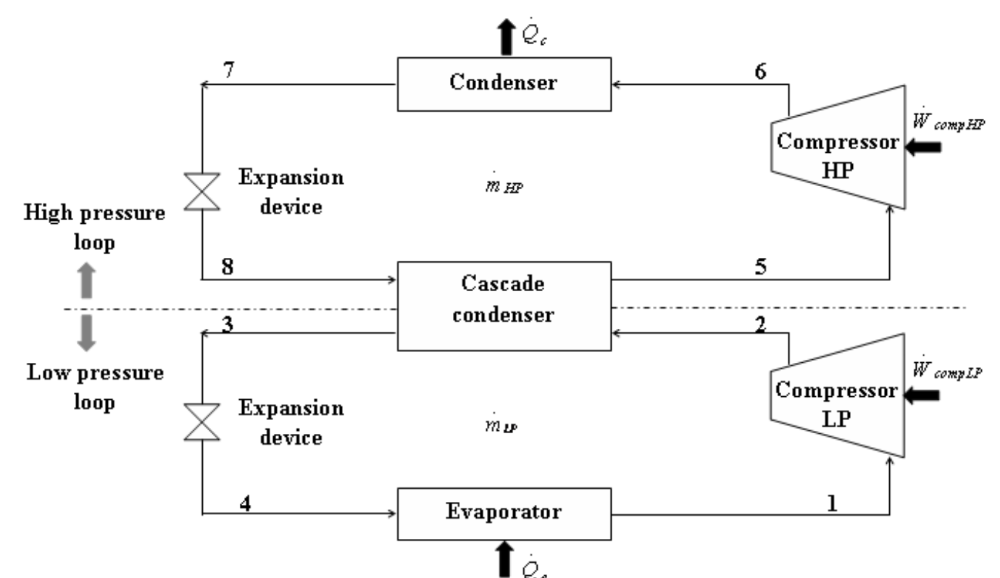

01Challenge
Find the inter-stage saturation temperature that maximizes COP for a two-stage cascade system using NH₃ and CO₂ refrigerants.
02Approach
I wrote a Jupyter notebook model that evaluates thermodynamic properties and the energy balance across both stages, sweeping evaporation and condensation temperatures.
03Result
The optimal intermediate temperature was 28.07 °C, giving a maximum COP of 4.95 and a projected cooling capacity of 225.08 kW.
Back to all projects